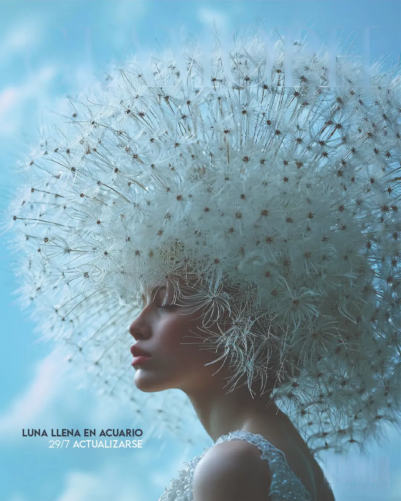

Spotify

Luna llena en Acuario. 28/7. Actualizarnos
Nadie sabe lo que puede un cuerpo.
B. Spinoza
Esta luna llena nos invita a expandirnos, a dejar que crezca en nuestra garganta la fuerza con la que somos capaces de pronunciar nuestro nombre. Claro, esta apertura es conmovedora y transformadora. Expandirnos es incrementar el poder del que somos capaces o sea, dejar pasar a través nuestro un caudal mayor de potencia, entregarnos a que algo más grande que nosotrxs haga un gesto a través nuestro.
La alegría, la vitalidad, el optimismo se vuelven posibles cuando podemos dejar atrás el dolor. Y muchas veces este gesto se logra a través de la conciencia. Entender y nombrar pueden permitirnos que lo que ha sucedido quede sencillamente en el pasado y pierda peso en el presente. Esta luna llena nos permite recuperar el futuro.
La confianza es fundamental para dejar atrás el dolor. Nos encontramos con la sonrisa cuando realmente somos capaces de enterrar lo que hemos vivido. Para eso es necesario ir dejando de lado lo doloroso, corriendo el foco y abriéndonos a que, al menos de a momentos, lo que nos afecta retroceda y dé paso a nuevas sensaciones, a emociones dulces y constructivas. Esta luna llena es el fin de un duelo, una memoria que logra enterrarse y olvidarse, un recuerdo que pierde densidad y gravitación en el presente. Es el sonido silencioso de algo que se acomoda adentro, y nos abre espacio para respirar.
En el corazón de lxs humanxs la naturaleza susurra haciéndonos cosquillas. El latido incesante señala que la vida ha anidado aquí, y está dispuesta a llegar a lugares nunca antes vistos, siquiera imaginados. En nuestro interior habita la palabra de todo aquello que por comodidad llamamos dios. El universo nos habla a través de nuestras pasiones, y nos dice que lo que somos importa tanto como la velocidad de rotación de Encélado, o la órbita excéntrica de Caronte. Latidos de un misterio que nos contiene, y que nunca seremos capaces de comprender del todo.
Recuperar el futuro es vitalmente necesario. Dejar de percibirlo como una mera distorsión del presente, como un devenir deformado de la desdicha actual e imaginar otros mundos posibles es cada día más urgente. Y para eso a veces es necesario poder establecer lazos ilógicos, impensables. Esta luna llena nos permite dejar atrás la necesidad de entenderlo todo. Abrazar nuestra inteligencia es reconocer sus límites. Somos capaces de entender lo entendible, necesitamos aprender a rendirnos ante el misterio, y a dejarlo guiar nuestros pasos en las tinieblas.
A veces vamos hacia el futuro con una sensación de derrota. Nos arrastramos hacia un destino que creemos inevitable, vemos en el horizonte tan solo nubes y nubes y nubes negras que nos auguran el peor de los diluvios. Pero al caminar nos topamos con primaveras, veranos, otoños y eventualmente algún infierno, pero nunca esa nube que imaginábamos. Aun cuando el viejo futuro distópico de una película de ciencia ficción pueda parecerse al presente, es importante saber que hay un peligro: cuando la imaginación teje sobre los ojos la sombra de los terrores futuros, construye un presente de angustia. Es prudente recordar que nadie sabe lo que puede un cuerpo.
Las escenas no necesariamente se resuelven como unx tendería a pensar lógicamente. Muchas veces creemos entender el modo en el que el mundo funciona y la vida no deja, incesantemente, de sorprendernos y de generar derivas. La dinámica de lo impensado es la melodía en la que danza la vida. Lo angustiante es intentar infructuosamente comprender la lógica de algo que solo puede ser contemplado. Cualquier amanecer es imposible.
Visualización.
Un brazo robótico se mueve repetitivamente y teje en su movimiento una ritmicidad pura. Un sonido reiterado emerge de su acción productiva. Otras máquinas, motores, procesos suman sus sonidos a una orquesta involuntaria. La música le arranca al frío metálico sentidos nuevos.
Suscribite para recibir los informes
La luna llena en cada casa
Casa 1
En la casa 1, esta luna llena nos invita a contactar con las formas concretas y tangibles con las que nuestra singularidad encuentra un espacio en el mundo. Somos a través de una sucesión de acontecimientos, gestos y producciones, que a su vez se articulan con una serie de vínculos que nos dan un sustrato, un contenido real y tangible, una materialidad, tanto en la sustancia como en la virtualidad, que da realidad a lo que somos. Siempre es posible ajustar un poco la ecualización entre los gestos que hacemos con la mirada puesta en lxs otrxs y aquellos gestos que hacemos intentando desplegar una potencia propia que habita en nuestra interioridad. Cuánto aparecemos en nuestros vínculos y cuánto nos escondemos en ellos.
Casa 2
En la casa 2, esta luna llena nos invita a encontrarnos con el disfrute y el placer que trae el presente, con la entrega a un momento actual en donde lo vivo se despliega, se vuelve voluptuoso, suntuoso. Y a iluminar las fuerzas activas del pasado que vienen a nutrirnos, a alimentar la potencia que somos. Nuestros ancestros aparecen como focos, faros de una vitalidad posible que alimenta y nutre nuestro presente, aunque muchas veces, en el desorden, se conviertan más bien en parásitos que restan, retiran, se llevan lo vivo que nos habita para alimentar las fantasías de transformar un pasado inconmovible.
Casa 3
En la casa 3, esta luna llena nos invita a reacomodar ciertas ideas recurrentes, repeticiones de un modo de concebir el mundo, la vida y de concebirnos a nosotrxs mismxs, de nombrar lo que somos, deseamos y necesitamos. Al mismo tiempo, también nos permite encontrarnos con la dimensión del juego de una forma más profunda, potente, activa, dándole otra consistencia. También puede llevarnos a desidentificarnos de nuestrxs hermanxs, fortaleciendo la propia individualidad más allá del lugar que tenemos en nuestra familia de origen.
Casa 4
En la casa 4, esta luna llena nos invita a comprender la importancia de la dimensión vincular en nuestra vida, a alojar más humildemente la necesidad de ser reconocidxs por nuestros pares, por nuestros semejantes. Somos siempre un punto en una trama, enredadxs de tal modo con lxs demás que nuestra individualidad está indisolublemente ligada y no puede ser pensada por fuera de estos lazos. Somos siempre una multitud. Necesitamos que así sea.
Casa 5
En la casa 5, esta luna llena nos permite reconocer lo singular que habita dentro nuestro, en nuestra obra, en nuestras creaciones, en nuestras producciones, en los artefactos, pero también en las escenas que producimos en el diálogo con otras personas. Producir no es solo hacer un cuadro, una mesa. Es también la forma que toma la trama colectiva sobre la que nos sostenemos y a la que alimentamos con nuestra presencia. Obrar es también tejer en lo sutil.
Casa 6
En la casa 6, esta luna llena nos permite registrar concretamente nuestras necesidades y alojarlas en una rutina de vida que nos permita sentir el amparo, el refugio de nuestra propia atención y de una mirada amorosa sobre nuestra propia vida. Que nuestra rutina se pueble de gestos de reconocimiento y comprensión de nuestra propia sensibilidad y de nuestras propias necesidades hace que podamos tener una vida más acorde a nuestra propia individualidad, una vida más cercana a la verdad que nos habita. Desde allí se construye la profunda humildad de entregarnos a ser quienes somos, aceptando que no hay otra cosa que podamos ser. Aunque sea incómodo, doloroso o nos asuste, solo podemos ser quienes somos.
Casa 7
En la casa 7, esta luna llena nos invita a sacar el foco de la búsqueda de un reconocimiento imposible y ponerlo un poco más en lo que nos enamora, nos fascina, nos atrae, nos parece increíblemente bello de las personas con las que nos rodeamos.
Mirar a lxs demás sin estar tan atentxs a lo que ven de nosotrxs.
También nos invita a regular el esfuerzo que hacemos cada día de nuestra vida para conseguir lo que suponemos imprescindible, lo que creemos central para nuestra existencia.
Casa 8
En la casa 8, esta luna llena nos invita a encontrar en nuestros ancestros la fuerza que necesitamos para sostener nuestra individualidad y a cuidarnos profundamente de entregarles lo que creemos que necesitamos darles para tener un lugar en nuestra familia. Muchas veces necesitamos llegar muy lejos para poder ser quienes somos. Y esa distancia que necesitamos recorrer requiere una fuerza, una potencia que nuestro clan puede aportarnos. Es importante dejar de retener ciertas ideas y conceptos que nos dejan atrapadxs en una estructura de vida.
Casa 9
En la casa 9, esta luna llena nos invita a preguntarnos profundamente de dónde surgen las convicciones que sostenemos. ¿Son el eco de una tradición? ¿Son la repetición de un esquema que nos da seguridad? ¿Son las fuerzas vivas que laten dentro nuestro las que, de algún modo, nos llevan a pensar esto que pensamos? En cualquier caso, la plasticidad de nuestras concepciones del mundo nos permite abrirnos a nuevas posibilidades, a nuevos escenarios, a nuevos esquemas vitales que honren lo que verdaderamente somos.
Casa 10
En la casa 10, esta luna llena nos invita a revisar las concepciones sobre el mundo y sobre las cosas que vuelven demasiado estructurado y demasiado estrecho nuestro vínculo con la sociedad de la que somos parte. A través de nuestro oficio nos vinculamos con el mundo, y a veces lo hacemos de formas demasiado acartonadas, que responden a una estructura heredada y antigua. Actualizar ese modo de relacionarnos con la actualidad del mundo en el que vivimos nos permite ser más productivxs y más eficientes en nuestro trabajo, al mismo tiempo que disfrutamos más de lo que hacemos.
Casa 11
En la casa 11, esta luna llena nos invita a abrir nuestra mente, a pensar cosas que hasta ahora no pensamos, a investigar en áreas en las que hasta ahora nunca incursionamos, a dejar, por ejemplo, que la tecnología, al alcance de la mano de todxs hoy, transforme de algún modo lo que somos capaces de producir, de hacer, de crear. Dejar que la actualidad de la vida que vivimos se nutra de nuevas ideas, de nuevas concepciones, de nuevas formas de entender las cosas, propias de nuestro tiempo. Los cambios en el mundo están siendo muy vertiginosos y a veces el tren nos deja afuera, paradxs en el andén con una cara de desconcierto que no cabe dentro de nuestro rostro. Pero es un tren que pasa incesantemente, al que podemos subirnos en cualquier momento. Nunca es tarde.
Casa 12
En la casa 12, esta luna llena nos evidencia rigideces emocionales que pesan sobre nosotrxs por el simple hecho de ser parte de la familia a la que pertenecemos. Parte de esas rigideces nos llevan a pensar las cosas de formas que son dolorosas e incómodas para nosotrxs. Esta luna nos lleva especialmente a abrir la capacidad de imaginar otros futuros posibles, concibiendo otras posibles circulaciones afectivas, otros modos posibles del amor, de la presencia, de la sensibilidad. Permite una renovación muy honda tanto de nuestra vida concreta y cotidiana como de la forma en la que concebimos el mundo sutil. Los sueños pueden estar agitados y verse sobreestimulados. Probablemente revelen un contenido psíquico profundo que nos cuesta nombrar en otros planos de nuestra vida.
La luna llena tocando tus planetas natales
Luna natal
Luna natal
Cuando la luna llena está en contacto con nuestra Luna natal, abre un período de profunda revisión y maduración de nuestro mundo emocional.
La forma en la que nos damos seguridad nos permite sostenernos en la vida de modos más expansivos cuanto más precisos y concretos son.
Quiero decir, si logro darme lo que me hace falta, puedo abrirme al mundo, a la aventura, a lo desconocido, con mucha mayor plenitud que si gasto enormes cantidades de tiempo y energía en sostenerme a salvo de lo que me amenaza.
Esta luna llena nos obliga a dejar atrás mecanismos que hasta ahora fueron útiles, eficientes, que nos sostuvieron frente a la intemperie, pero que ahora se han convertido en un lastre para el despliegue de nuestra individualidad.
Protegernos con la suficiente precisión nos abre lugar a nutrirnos del mundo en el que amamos caminar.
Sol natal
Sol natal
La luna llena en contacto con nuestro Sol natal nos permite cerrar un ciclo sostenido alrededor de la búsqueda de un resguardo emocional y abrirnos a la aventura de ser quienes somos, desplegando esa individualidad valiosa y enriquecedora hacia afuera, hacia el mundo exterior, hacia lo colectivo y en contacto con nuestra contemporaneidad.
Nos muestra lo que ya no somos, lo que ya no podemos seguir siendo, lo que ya no se sostiene de nuestra identidad, pero al mismo tiempo nos abre una profunda capacidad de construir aquello en lo que podemos convertirnos.
El futuro se abre por el simple hecho de que el pasado ha cerrado su ciclo.
Marte
Marte
Cuando la luna llena toca planetas personales se vuelve más intensa y marca sus efectos sobre nuestra vida de un modo más nítido. Con Marte, llevaremos conciencia a nuestros enojos y nos daremos espacios para emprender, para iniciar alguna aventura. Nos invita a indagar en la propia fuerza, observando las retenciones y los autocastigos a esa potencia preciosa de nuestro ser animal.
Mercurio
Mercurio
En contacto con Mercurio, la luna llena nos trae la posibilidad de dejar de evadir ciertas preguntas. Darle espacio a nuestra curiosidad y dejar de engañarnos. Dejar de defendernos con la palabra, y usarla como una forma de abrirnos espacio en el mundo, de integrarnos a él.
Venus
Venus
Tocando Venus invita a revisar de qué forma construimos aquello que nos seduce, que nos atrae; la forma en la que seducimos y atraemos. Alguna de nuestras estrategias se vuelve consciente, registramos qué hay detrás de que nos guste (o no logremos que nos guste) determinadas cosas o personas.
Nodo Norte
Nodo Norte
La luna llena sobre el Nodo Norte nos traerá algún acercamiento a las profundidades de nuestro ser, mostrando con la luz misteriosa de la luna alguna postal de lo que somos en el nivel más profundo de nuestra existencia. Es interesante escuchar con atención nuestros sueños. Es un tránsito que acerca mucho la posibilidad de comprender los aprendizajes que traemos a esta vida y los que tenemos pendientes. Acerca a la conciencia voces profundas de nuestro mundo interior, necesidades de nuestra alma que se pondrán de manifiesto, llegando a la conciencia. Son tránsitos que pueden estar acompañados de crisis y sacudidas fuertes, movimientos en lo profundo de nuestro mar interior que se agita sin que entendamos bien por qué. Nos acercamos a entender algo de lo que necesitamos terminar de conquistar para encontrar ese camino propio en este mundo extraño.
Lilith
Lilith
La luna llena tocando a Lilith nos acerca algunos contenidos velados de nuestro inconsciente profundo. Un acercamiento visceral, corporal. La posibilidad de registrar la fuerza de nuestro cuerpo deseando acercarse a algo o rechazando algo con mucha potencia. Abre la posibilidad de hacer conscientes compulsiones y repeticiones. Nos acerca un poco al misterioso mundo del cuerpo, de la potencia del cuerpo. Quizás algún secreto que guardamos de nosotres mismes pueda ser revelado en este período, si estamos maduros para acercarnos a lo escondido.
Júpiter natal
Júpiter natal
La luna llena sobre nuestro Júpiter natal nos permite revisar algunos sentidos que venimos sosteniendo a pesar de que hayan ido perdiendo realidad. Perder, un momento, el rumbo, para encontrar nuevos caminos. Nos habilita también llegar a consumar un saber, una convicción, una fe. La cúspide de un camino revela el horizonte.
Saturno
Saturno
La luna llena en contacto con Saturno nos abre la posibilidad de registrar los desajustes en los límites que nos estamos dando. Ya sea una falta o un exceso de límites, la luna invita a dejar de sostener ciertas represiones que nos inhiben para darle espacio a una fuerza deseante que nos habita, a través de lograr encauzar lo que somos en lugar de reprimirlo.
Quirón
Quirón
Los contactos de la luna llena con Quirón nos acercan un poco a lo consciente algún contenido de nuestras heridas más profundas. Poder nombrar algo de lo que nos ha dolido en nuestra historia nos permite ir tramitando, y en esta luna eso se vuelve posible. También abre la posibilidad de dejar de repetir algo de lo que hacemos esperando resolver aquello que no tiene solución.
Neptuno
Neptuno
Una luna llena en contacto con Neptuno natal nos desinfla ilusiones profundas, y muchas veces nos lleva a la desesperanza. Es cierto que a veces perder la esperanza nos permite empezar a encontrar la satisfacción real que necesitamos en nuestras vidas, y dejar de perseguir sueños imposibles que nos frustran repetidamente. También es una ocasión especial para dejar que algo misterioso aparezca en nuestra vida, tome cuerpo y se haga parte de nuestra realidad. La intimidad se abre y nos permite alojar una sensibilidad extraordinaria que eleva la visión mundana de la vida y permite contactar con otras profundidades. El alma nos prepara una sopa, cuida de nuestros cuerpos cansados y nos recuerda el propósito de nuestro cuerpo, lo sagrado que nos habita y las direcciones vitales en las que nuestra verdad se vuelve la verdad del universo.
Urano
Urano
Cuando la luna llena hace contacto con nuestro Urano natal, nos lleva a cuestionar un modo de entender el mundo que hasta ahora nos había servido para establecer puentes con la realidad externa, pero que de pronto se revela insuficiente.
La necesidad de actualizar nuestras ideas, de algún modo u otro, nos permite salir de un sesgo emocional con el que establecemos, al mismo tiempo, un contacto con una parte de la realidad y una distancia con otras partes de la realidad.
Esta nueva apertura, que nos permite pensar de otro modo las cosas, nos permite establecer lazos más actuales y vigentes con la sociedad de la que somos parte, con nuestra contemporaneidad.
Algunos planes que hicimos llegan a su fin, ya sea porque se convierten en proyectos y se realizan, como porque registramos su imposible materialización.
Si los paradigmas intelectuales con los que interpretamos la realidad se sostienen más en la fidelidad con nuestro clan, en la memoria colectiva y en un sesgo emocional, esta luna llena nos permitirá dejar atrás algunas de las ideas que sostenemos rígidamente.
Plutón
Plutón
Cuando la luna llena toca nuestro Plutón natal, abre una ventana de encuentro con la energía de este planeta transpersonal que habitualmente nos resulta extraña y lejana, o al menos distante, extranjera.
Incorporar los principios fundamentales de la potencia plutoniana nos permite reconocer la intensidad de nuestro deseo y, de algún modo, hacerle un lugar en nuestra vida.
En Plutón aparece el poder, y, dentro de eso, esta luna llena puede invitarnos a dejar atrás vínculos de sometimiento que nos aprisionan y nos encarcelan, o a construir una relación más fluida y rica con nuestra propia potencia.
La sexualidad es parte de los temas que trabajaremos durante este ciclo, del mismo modo que se pondrá sobre la mesa nuestro mundo emocional, permitiéndonos navegar en aguas profundas y encontrarnos con otras temperaturas.